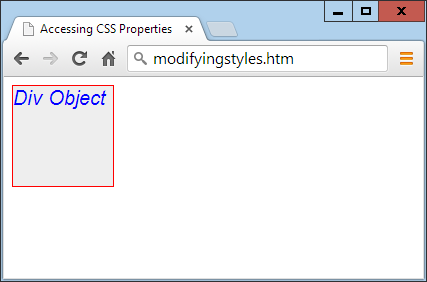
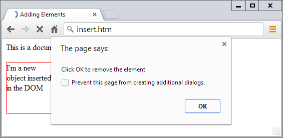
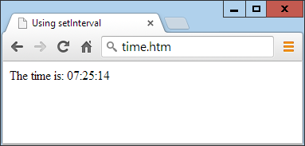
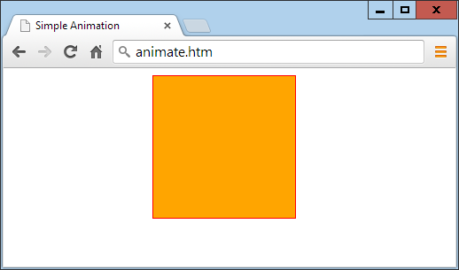

function O(i)
{
return document.getElementById(i)
}
This alone saves 22 characters of typing each time it’s called. But I choose to extend
the function a little by allowing either an ID name or an object to be passed to this
function, as shown in the complete version of the function in
Example 20-1
.
function O(i)
{
return typeof i == 'object' ? i : document.getElementById(i)
}
If an object is passed to the function, it just returns that object back again. Otherwise,
it assumes that an ID is passed and returns the object to which the ID refers.
function S(i)
{
return O(i).style
}
The
S
in this function name is the first letter of
Style
, and the function performs the
task of returning the
style
property (or subobject) of the element referred to.
Because the embedded
O
function accepts either an ID or an object, you can pass
either an ID or an object to
S
as well.
<div id='myobj'>Some text</div>
<script>
O('myobj').style.color = 'green'
</script>
The preceding code will do the job, but it’s much simpler to call the new
S
function,
like this:
S('myobj').color = 'green'fred = O('myobj')S(fred).color = 'green'
<div class='myclass'>Div contents</fiv>
<p class='myclass'>Paragraph contents</p>
If you want to access all elements on a page that use a particular class, you can use the
C
function (for the first letter of
Class
), shown in
Example 20-3
, to return an array
containing all the objects that match a class name provided.
function C(i)
{
return document.getElementsByClassName(i)
}
To use this function, simply call it as follows, saving the returned array so that you
can access each of the elements individually as required or (more likely to be the case)
en masse via a loop:
myarray = C('myclass')
for (i = 0 ; i < myarray.length ; ++i)
S(myarray[i]).textDecoration = 'underline'
This code iterates through the objects in
myarray[]
and then uses the
S
function to
reference each one’s style property, setting its
textDecoration
property to
underline
.
<script src='OSC.js'></script>
function O(i) { return typeof i == 'object' ? i : document.getElementById(i) }
function S(i) { return O(i).style }
function C(i) { return document.getElementsByClassName(i) }
myobject.fontSize = '16pt'myobject.setAttribute('style', 'font-size:16pt')
<!DOCTYPE html>
<html>
<head>
<title>Accessing CSS Properties</title>
<script src='OSC.js'></script>
</head>
<body>
<div id='object'>Div Object</div>
<script>
S('object').border = 'solid 1px red'
S('object').width = '100px'
S('object').height = '100px'
S('object').background = '#eee'
S('object').color = 'blue'
S('object').fontSize = '15pt'
S('object').fontFamily = 'Helvetica'
S('object').fontStyle = 'italic'
</script>
</body>
</html>

Figure 20-1. Modifying styles from JavaScript| Property | Sets and/or returns |
| closed | Returns a Boolean value indicating whether a window has been closed or not |
| defaultStatus | Sets or returns the default text in the status bar of a window |
| document | Returns the document object for the window |
| frames | Returns an array of all the frames and iframes in the window |
| history | Returns the history object for the window |
| innerHeight | Sets or returns the inner height of a window’s content area |
| innerWidth | Sets or returns the inner width of a window’s content area |
| length | Returns the number of frames and iframes in a window |
| location | Returns the location object for the window |
| name | Sets or returns the name of a window Property Sets and/or returns |
| navigator | Returns the navigator object for the window |
| opener | Returns a reference to the window that created the window |
| outerHeight | Sets or returns the outer height of a window, including tool and scroll bars |
| outerWidth | Sets or returns the outer width of a window, including tool and scroll bars |
| pageXOffset | Returns the pixels the document has been scrolled horizontally from the left of the window |
| pageYOffset | Returns the pixels the document has been scrolled vertically from the top of the window |
| parent | Returns the parent window of a window |
| screen | Returns the screen object for the window |
| screenLeft | Returns the x coordinate of the window relative to the screen in all recent browsers except Mozilla Firefox (for which you should use screenX ) |
| screenTop | Returns the y coordinate of the window relative to the screen in all recent browsers except Mozilla Firefox (for which you should use screenY) |
| screenX | Returns the x coordinate of the window relative to the screen in all recent browsers except Opera, which returns incorrect values; not supported in versions of IE prior to 9 |
| screenY | Returns the y coordinate of the window relative to the screen in all recent browsers except Opera, which returns incorrect values; not supported in versions of IE prior to 9 |
| self | Returns the current window |
| status | Sets or returns the text in the status bar of a window |
| top | Returns the top browser window |
<!DOCTYPE html>
<html>
<head>
<title>Inline JavaScript</title>
</head>
<body>
<img src='apple.png'
onmouseover="this.src='orange.png'"
onmouseout="this.src='apple.png'">
</body>
</html>
<!DOCTYPE html>
<html>
<head>
<title>Non-inline JavaScript</title>
<script src='OSC.js'></script>
</head>
<body>
<img id='object' src='apple.png'>
<script>
O('object').onmouseover = function() { this.src = 'orange.png' }
O('object').onmouseout = function() { this.src = 'apple.png' }
</script>
</body>
</html>
In the HTML section, this example gives the
<img>
element an ID of
object
, and
then proceeds to manipulate it separately in the JavaScript section by attaching
anonymous functions to each event.
| Event | Occurs |
| onabort | When an image’s loading is stopped before completion |
| onblur | When an element loses focus |
| onchange | When any part of a form has changed |
| onclick | When an object is clicked |
| ondblclick | When an object is double-clicked |
| onerror | When a JavaScript error is encountered |
| onfocus | When an element gets focus |
| onkeydown | When a key is being pressed (including Shift, Alt, Ctrl, and Esc) |
| onkeypress | When a key is being pressed (not including Shift, Alt, Ctrl, and Esc) |
| onkeyup | When a key is released |
| onload | When an object has loaded |
| onmousedown | When the mouse button is pressed over an element |
| onmousemove | When the mouse is moved over an element |
| onmouseout | When the mouse leaves an element |
| onmouseover | When the mouse passes over an element from outside it |
| onmouseup | When the mouse button is released |
| onsubmit | When a form is submitted |
| onreset | When a form is reset |
| onresize | When the browser is resized |
| onscroll | When the document is scrolled |
| onselect | When some text is selected |
| onunload | When a document is removed |
<!DOCTYPE html>
<html>
<head>
<title>Adding Elements</title>
<script src='OSC.js'></script>
</head>
<body>
This is a document with only this text in it.<br><br>
<script>
alert('Click OK to add an element')
newdiv = document.createElement('div')
newdiv.id = 'NewDiv'
document.body.appendChild(newdiv)
S(newdiv).border = 'solid 1px red'
S(newdiv).width = '100px'
S(newdiv).height = '100px'
newdiv.innerHTML = "I'm a new object inserted in the DOM"
tmp = newdiv.offsetTop
alert('Click OK to remove the element')
pnode = newdiv.parentNode
pnode.removeChild(newdiv)
tmp = pnode.offsetTop
</script>
</body>
</html>
Figure 20-3
shows this code being used to add a new
<div>
element to a web docu‐
ment. First, the new element is created with
createElement
; then the
appendChild
function is called, and the element gets inserted into the DOM.

Figure 20-3. Inserting a new element into the DOMelement.parentNode.removeChild(element)
pnode = element.parentNode
pnode.removeChild(element)
tmp = pnode.offsetTop
This first statement makes a copy of
element.parentNode
(the parent element of the
object) in
pnode
, which (after the child element is removed) has its
offsetTop
prop‐
erty looked up (and discarded in the throwaway variable
tmp
), thus ensuring that the
DOM is fully refreshed.
myobject.visibility = 'hidden'myobject.visibility = 'visible'myobject.display = 'none'myobject.display = 'block'mylement.innerHTML = '<b>Replacement HTML</b>'O('someid').innerHTML = 'New contents'O('someid').innerHTML = ''setTimeout(dothis, 5000)
function dothis()
{
alert('This is your wakeup alert!');
}
In case you’re wondering, you cannot simply specify
alert()
(with
brackets) as a function to be called by
setTimeout
, because the
function would be executed immediately. Only when you provide a
function name without argument brackets (for example,
alert
)
can you safely pass the function name so that its code will be exe‐
cuted only when the time-out occurs.
setTimeout("alert('Hello!')", 5000)setTimeout("document.write('Starting'); alert('Hello!')", 5000)
setTimeout(dothis, 5000)
function dothis()
{
setTimeout(dothis, 5000)
alert('I am annoying!')
}
Now the alert will pop up every five seconds.
handle = setTimeout(dothis, 5000)clearTimeout(handle)
<!DOCTYPE html>
<html>
<head>
<title>Using setInterval</title>
<script src='OSC.js'></script>
</head>
<body>
The time is: <span id='time'>00:00:00</span><br>
<script>
setInterval("showtime(O('time'))", 1000)
function showtime(object)
{
var date = new Date()
object.innerHTML = date.toTimeString().substr(0,8)
}
</script>
</body>
</html>

Figure 20-4. Maintaining the correct time with interruptsvar date = new Date()object.innerHTML = date.toTimeString().substr(0,8)The time is: <span id='time'>00:00:00</span>setInterval("showtime(O('time'))", 1000)showtime(O('time'))handle = setInterval("showtime(O('time'))", 1000)clearInterval(handle)setTimeout("clearInterval(handle)", 10000)
<!DOCTYPE html>
<html>
<head>
<title>Simple Animation</title>
<script src='OSC.js'></script>
<style>
#box {
position :absolute;
background:orange;
border :1px solid red;
}
</style>
</head>
<body>
<div id='box'></div>
<script>
SIZE = LEFT = 0
setInterval(animate, 30)
function animate()
{
SIZE += 10
LEFT += 3
if (SIZE == 200) SIZE = 0
if (LEFT == 600) LEFT = 0
S('box').width = SIZE + 'px'
S('box').height = SIZE + 'px'
S('box').left = LEFT + 'px'
}
</script>
</body>
</html>

Figure 20-5. This object slides in from the left while changing size